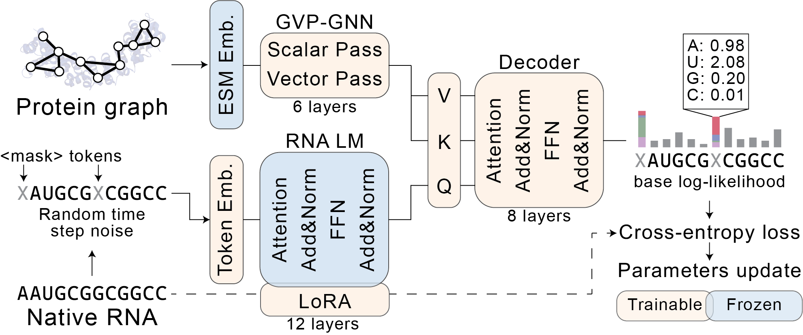
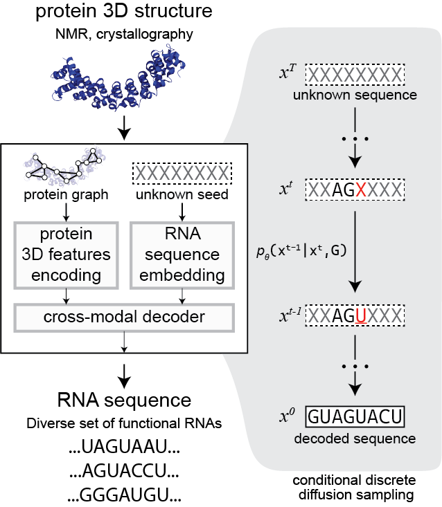
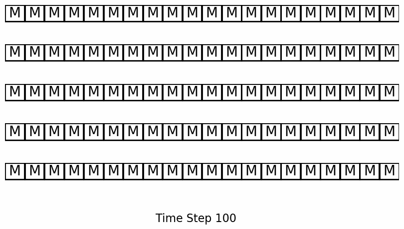
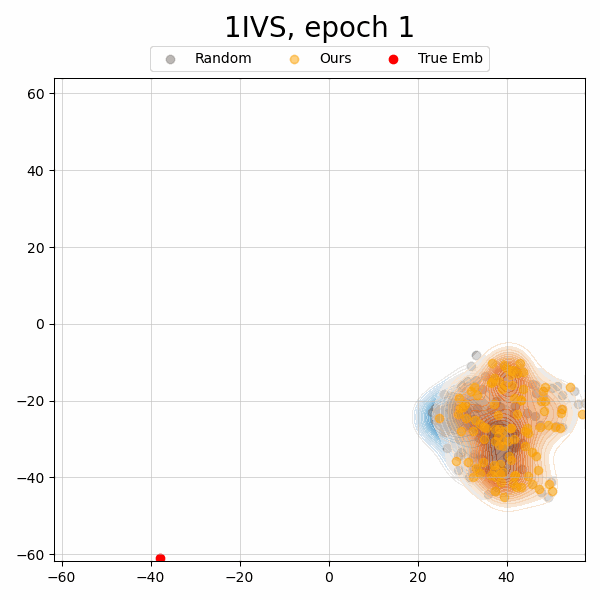
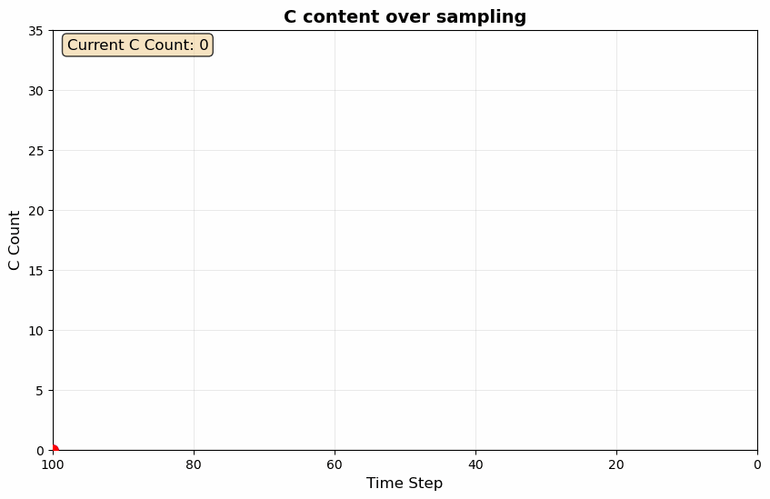

Protein–RNA interactions govern nearly every aspect of post-transcriptional gene regulation, yet rational design of RNA sequences for specified protein partners remains an unsolved challenge. Current approaches require explicit modeling of RNA three-dimensional structure, a problem complicated by RNA's conformational flexibility, limited structural data, and the computational cost of accurate folding predictions. Here we introduce the concept of topological transcription: generating functional RNA sequences directly from protein surface topology, eliminating the need for RNA backbone specification. We implement this paradigm in EchoRNA, a discrete diffusion model that builds upon pretrained protein and RNA foundation models rather than learning interaction patterns from scratch. By leveraging evolutionary knowledge encoded in these foundation models, EchoRNA learns from just several thousand curated protein–RNA complexes to generate sequences that achieve high-confidence folding predictions, spontaneously recover canonical binding motifs, and exhibit thermodynamic stabilities matching native RNAs. Moreover, validation against independent SELEX and RBNS experimental datasets confirms capture of both established and previously uncharacterized high-affinity sequence features of EchoRNAs. Topological transcription establishes a new framework for programmable RNA design, with immediate applications in therapeutic development and synthetic biology.
Architecture

Fig. 1. EchoRNA architecture. The model processes protein structure through a GVP-GNN encoder and generates RNA sequences via a cross-attention transformer conditioned on protein features, using discrete absorbing diffusion with RNA-FM as the RNA language model backbone.
Protein encoder — GVP-GNN with 6 layers processing residue-level graphs. Protein residues are featurized using ESM-2 (1,280-dim) and ESM-IF (512-dim) embeddings, providing rich evolutionary and structural context.
RNA language model — RNA-FM fine-tuned with Low-Rank Adaptation (LoRA, r=64, α=128) applied to attention projection and dense layers. LoRA preserves pretrained evolutionary knowledge while adapting to the protein-conditioned generation task.
Cross-attention transformer — 8-layer decoder where RNA features serve as queries and protein features provide keys and values. Timestep conditioning via TimeConditionedLayerNorm enables the model to track denoising progress across T=100 diffusion steps.
Diffusion Process

Fig. 2. Absorbing discrete diffusion over RNA sequences. Forward process progressively masks tokens according to a cosine schedule; the reverse process learns to restore masked tokens conditioned on protein structure.
EchoRNA employs absorbing discrete diffusion: during the forward process, RNA nucleotides are progressively replaced by a special MASK token according to a cosine noise schedule over T=100 timesteps. The model learns the reverse process—restoring masked tokens to their original nucleotide identity—conditioned on the target protein's three-dimensional structure. A reparameterized decoding objective directly predicts the clean sequence at each step, stabilizing training and enabling efficient one-shot generation.
Results
0.701Demasking accuracy
8 / 16RBPs with ipTM > random
7 / 8RBPs improved vs. baseline dataset
>163 MParameters

PUM2 motif recovery. EchoRNA generates sequences enriched in the UGUA motif characteristic of Pumilio-family protein binding, without explicit motif supervision.

Denoising trajectory. Visualization of the reverse diffusion process for a representative RBP (1IVS), showing progressive token recovery across timesteps.

PCBP sequence content. Nucleotide composition dynamics during generation for PCBP, illustrating how cytosine-rich motifs emerge under protein conditioning.
AlphaFold3 predictions of protein-RNA complexes showed that EchoRNA's ipTM scores were significantly greater than random RNA sequences for 8 out of 16 distinct test proteins, with performance comparable to or exceeding native sequences for MiaB, Val-tRNA synthetase, Dis3L2, SelB, HIV Rev, and tRNA-guanine transglycosylase. In generalization experiments, the DAZL recovery rate improved from 0.50 (zero-shot, no RRM examples) to 0.83 with 50 RRM-family training examples, with the model spontaneously recovering the canonical UUG-triplet binding motif. Validation against independent HTR-SELEX and RBNS datasets confirmed that EchoRNA captures both established and previously uncharacterized high-affinity sequence features.
Dataset
EchoRNA introduces the Echo dataset, a curated collection of protein-RNA complexes from the BioLiP database, substantially expanding coverage over prior baselines. High-quality structures (resolution ≤ 4.5 Å) were filtered to exclude double-stranded RNA and RNA/DNA hybrids, then clustered at 40% protein sequence identity to construct a non-redundant benchmark.
Dataset
Source
Training
Validation
Test
RNA length
Echo dataset
BioLiP
2,672
264
22
8–254 nt
Baseline (RNAFlow)
PDBBind 2020
1,059
117
16
—
Test set proteins were selected to include six well-characterized RBPs with known binding motifs (PUM2, RBFOX1, NOVA2, MSI1, PCBP1, zc3h12a). Baseline dataset uses a 7 Å distance threshold between protein Cα and RNA C'4 atoms.
Citation
@article{melnichenko_cho2025echorna,
title = {Topological Transcription for Protein-Binding RNA Sequence Design via Discrete Diffusion},
author = {Melnichenko, Daniil and Cho, Joohyun and Yang, Sungchul and Lim, Jongmin
and Back, Haeun and Kim, Dongsup and Lee, Young-suk},
journal = {bioRxiv},
year = {2025}
}
Closed-form: q(rt | r⁰) = Cat(rt; αt·r⁰ + (1−αt)·qnoise), where
qnoise places all probability mass on the MASK token [M].
αt = ∏s=1..t βs, with T = 100 diffusion steps.
Algorithm 2 — Training Objective (Reparameterized Cross-Entropy)
Input: dataset of (protein graph 𝒢, RNA sequence r⁰) pairs; model pθ
compute mask indicator: bt(i) = 𝟙[rti = [M]] // 1 if masked at position i
predict clean tokens: pθ(r⁰ | rt, 𝒢)
compute loss:
ℒ = −∑i bt(i) · log pθ(r⁰i | rt, 𝒢)// only over masked positions
update θ via AdamW (lr = 10⁻³, β₁=0.9, β₂=0.95, wd=10⁻³)
until convergence (max 50 epochs, early stop on validation loss)
Constant time weighting λt = 1 for all t. Gradient accumulation over nacc = 42 steps; mini-batch size B = 20.
Mixed-precision (AMP) training on a single NVIDIA A6000 (48 GB).
confidencei ← pθ(r̂⁰i | rt, 𝒢)// predicted probability of chosen token
// Compute masking rate for next step
ρt ← cos(((T−t) / T) · (π/2)) // fraction of positions to re-mask
k ← round(ρt · L) // number of positions to mask
// Optional: add Gumbel noise for diversity
if stochastic then
scorei ← confidencei + Gumbel(0, ρt)
else
scorei ← confidencei
end if
// Re-mask least confident positions
𝒮 ← indices of k smallest scorei
for each i do
if i ∈ 𝒮thenrt−1i ← [M] elsert−1i ← r̂⁰i
end for
end for
returnr0// fully denoised sequence
Stochastic top-k denoising with Gumbel noise temperature τ = ρt encourages sequence diversity
while still concentrating probability mass on high-confidence predictions.
Special tokens (BOS, EOS, PAD) are excluded from masking and re-masking.